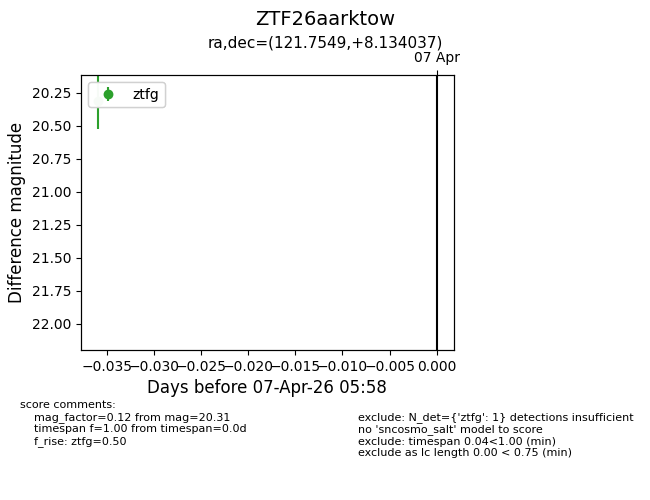
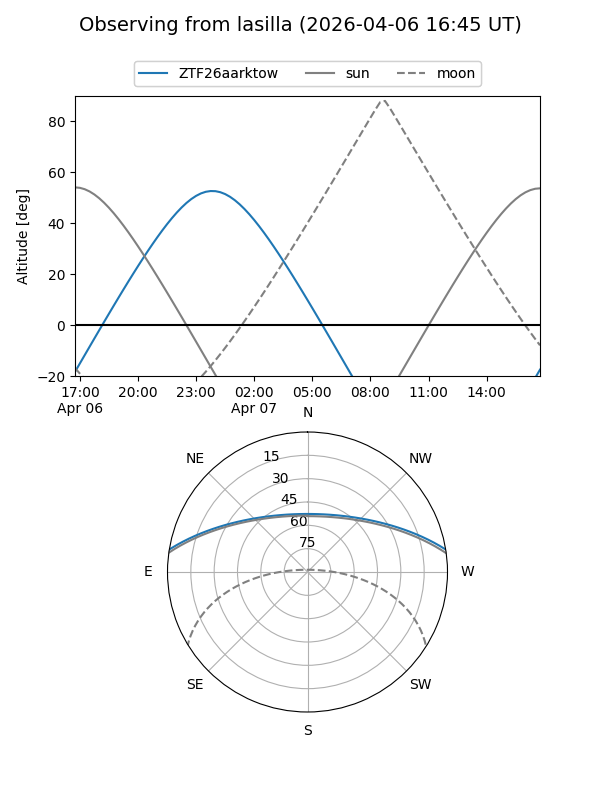
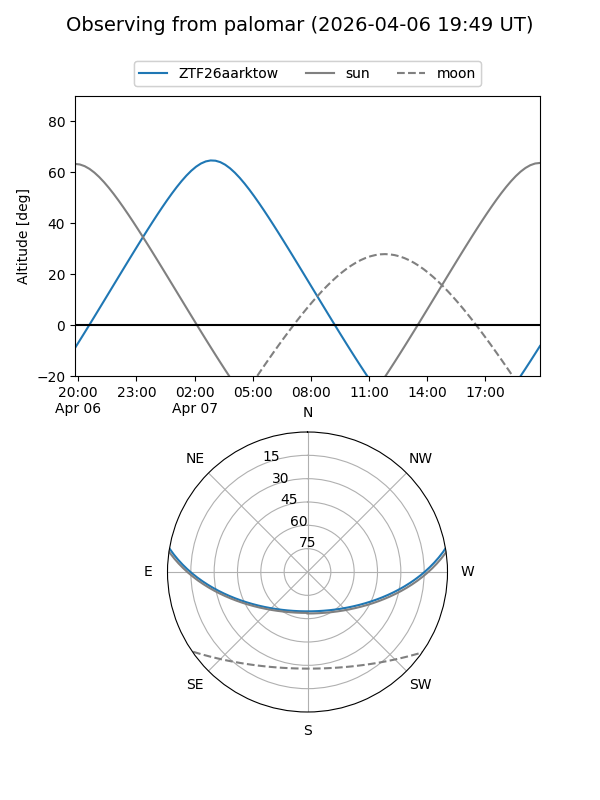

ZTF26aarktow
Target ZTF26aarktow at 2026-04-07 06:02
Aliases and brokers:
FINK: link
Lasair: link
ALeRCE: link
alt names
ZTF26aarktow (ztf,fink_ztf)
Coordinates:
equatorial (ra, dec) = 121.7549,+8.13404
equatorial (HMS+DMS) = 08:07:01.17,+08:08:02.53
galactic (l, b) = (214.1709,+20.47705)
Flags:
Photometry:
last ztfg=20.31
1 ztfg detections
Lightcurve

Visibility


Additional plots